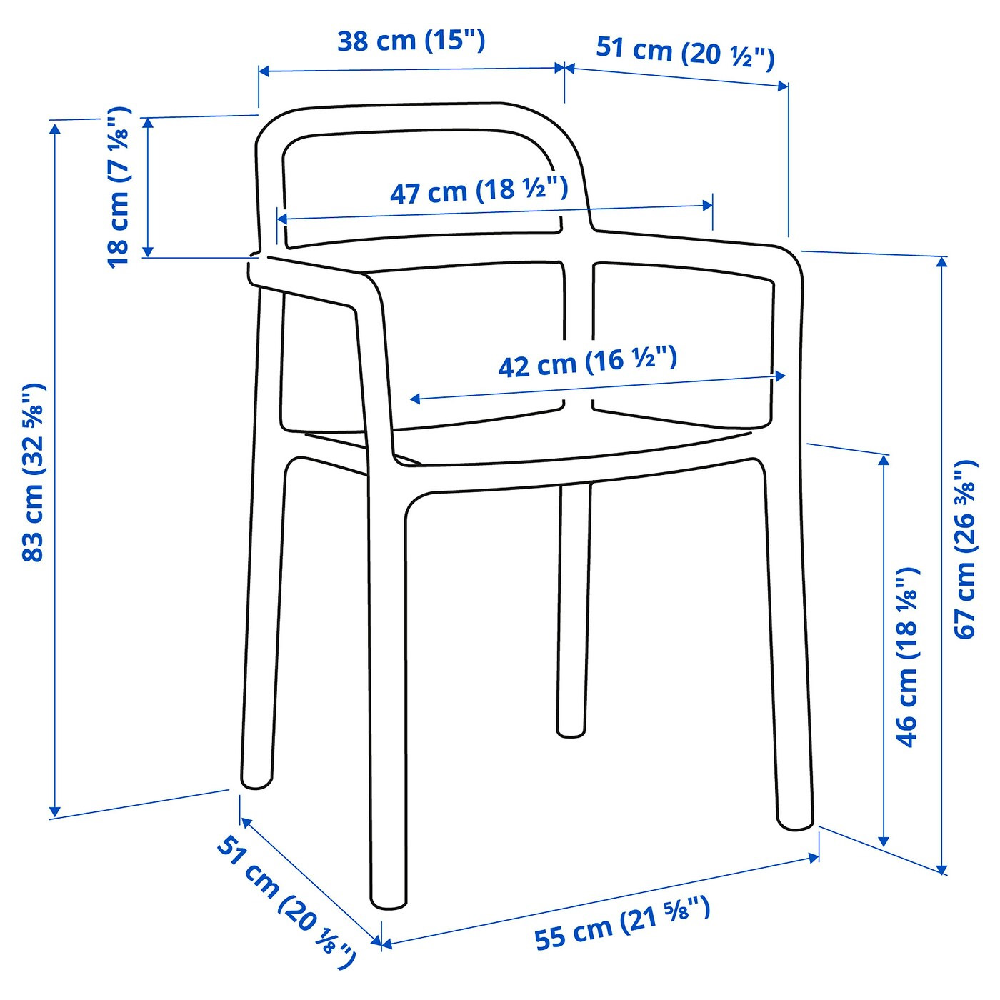

배송 여부는 결제 단계에서 확인하실 수 있습니다.
튼튼하고 내구성이 뛰어나서 공용 가구의 기준에 부합합니다. 단일 몰드로 만든 의자로 조립하거나 나사를 다시 조일 필요가 없어요. 가벼워서 쉽게 옮길 수 있습니다. 실내, 실외에서 모두 사용하기 적합합니다. 청소가 쉽습니다. 보관시에는 쌓아둘 수 있어 공간을 절약할 수 있습니다. 의자는 공공사용을 위한 검사를 마쳤으며 EN 16139, ANSI/BIFMA x5.1의 안전성 및 내구성, 안정성 기준에 부합하는 제품입니다.
디자이너
HAY
주요 부품: 강화 폴리프로필렌 플라스틱
다리받침: 합성고무
깨끗한 천으로 물기를 닦아주세요.
시험 중량: 100 kg
폭: 55 cm
깊이: 51 cm
높이: 83 cm
시트 폭: 42 cm
시트 깊이: 43 cm
시트 높이: 45 cm

폭: 55 cm
높이: 52 cm
길이: 83 cm
무게: 5.45 kg
패키지: 1
인증필 유무: KC 안전 기준을 충족합니다.
색상: 제품명 또는 이미지 참조
구성품: 제품정보 또는 구성품 탭 참조
크기: 제품정보 탭 참조
중량: 제품정보 탭 참조
재질: 재질 및 환경 탭 참조
제조사: IKEA of Sweden AB
제조국: 이탈리아
수입자: 이케아코리아 유한회사
배송&설치비용: 이케아 서비스 페이지 참조
품질보증: IKEA 품질 보증 기준을 따릅니다. 홈페이지에서 IKEA 품질 보증을 확인 하세요.
교환 환불 책임자와 전화 번호: 이케아코리아 유한회사/ 1670-4532
동일모델의 출시년월: 10/1/2017
취급시 주의 사항(세탁방법 및 사용 연령): 제품정보 탭 참조
제조년월 제조일자:번째 주 생산제품)